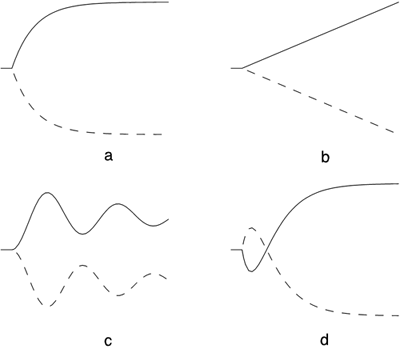

| [ Team LiB ] |
|
3.1 BackgroundOne of the major goals of this chapter is to obtain an understanding of process dynamics. Process engineers tend to think of process dynamics in terms of the response of a process to a step input change. Assume that the process is initially at steady state, then apply a step change to an input variable. The majority of chemical processes will exhibit one of the responses shown in Figure 3-1. In this plot, we assume that a positive step increase has been made to the input variable of interest. The solid curves are examples of "positive gain" processes; that is, the process output increases for an increase in the input. The dashed lines are those of negative gain processes. The curves in Figure 3-1a show a monotonic change in the output; this behavior is generally known as overdamped. The curves in Figure 3-1b are indicative of "integrating" processes; a prime example is a liquid surge vessel, where the level continues to change when there is an imbalance in the inlet and outlet flow rates. The curves in Figure 3-1c are known as underdamped or oscillatory responses. This type of behavior may occur in exothermic chemical reactors or biochemical reactors. It more often occurs in processes that are under feedback control, particularly if the controller is poorly tuned. The behavior shown in Figure 3-1d is known as "inverse response" and is seen in steam drums, distillation columns, and some adiabatic plug flow reactors. Figure 3-1. Common responses of process outputs to step changes in process inputs. Assuming a positive step change, the solid curves are illustrative of "positive gain" processes, and the dashed curves are indicative of "negative gain" processes. (a) Overdamped or first order, (b) integrating, (c) underdamped or oscillatory, and (d) inverse response. In the sections that follow, we discuss the characteristics of process models that lead to each of the behaviors shown in Figure 3-1. |
| [ Team LiB ] |
|